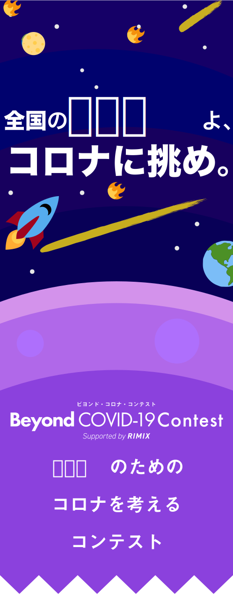
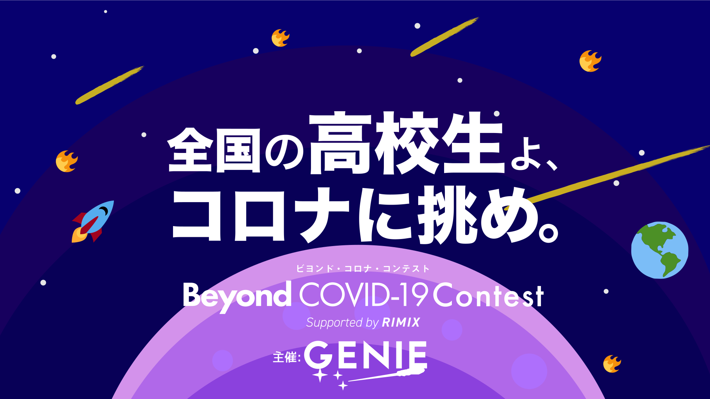
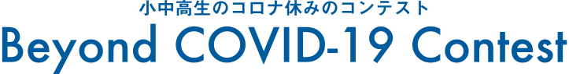
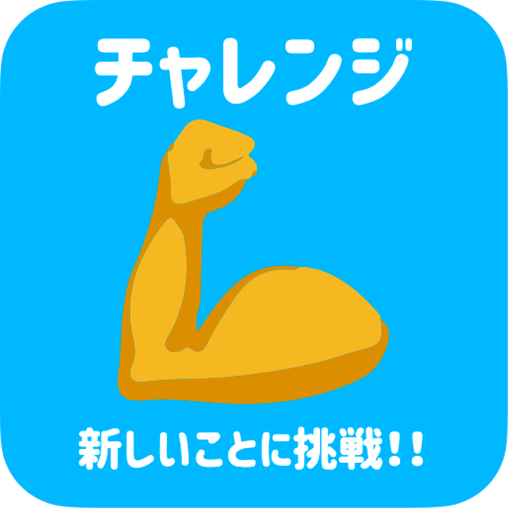
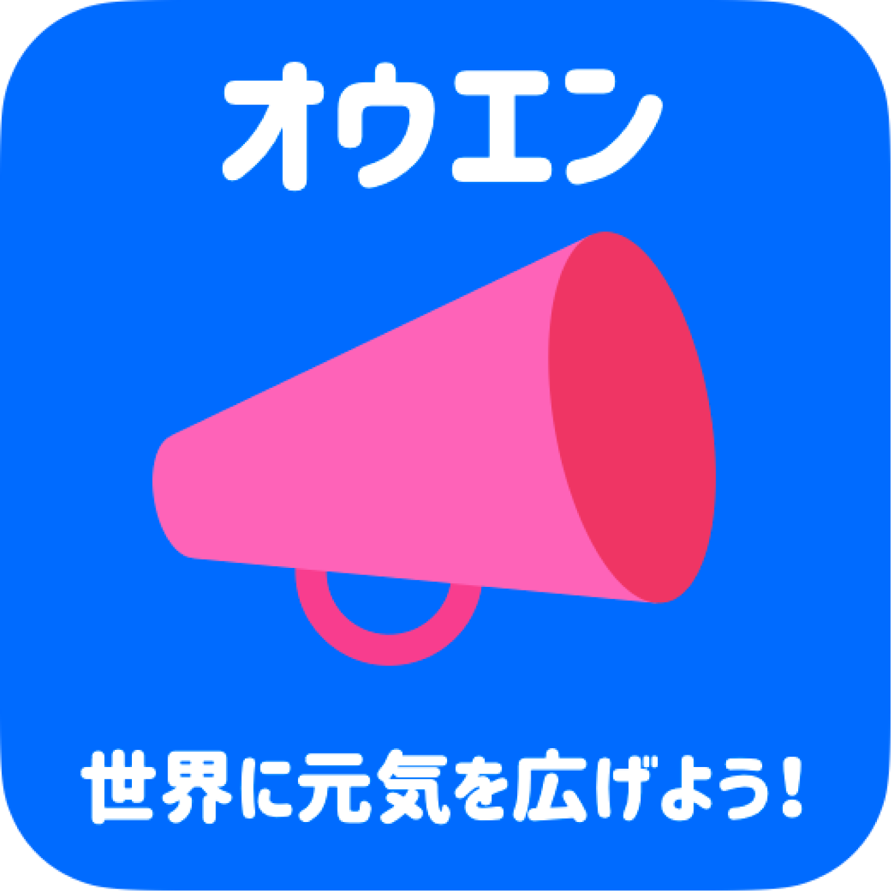

ルール説明・テーマ
今回のビヨンド・コロナ・コンテストでは全部で3つ

応募テーマ
①チャレンジ

新しいことに
挑戦してみよう！!
新型コロナウイルスに伴う緊急事態宣言によって多くの高校生が家にひきこもることを強いられています。
最近のコロナ生活、みなさんはどうお過ごしですか？コロナ休みには、今までできなかったことに挑戦する良絶好のチャンス！！
そんななかで新しく始めたことを募集します。新しく何かに挑戦しよう！！
詳細
外出自粛を強いられている状況だからこそ、新しいことに挑戦することができます。テーマ①のチャレンジでは以下の項目を募集します。
この期間にチャレンジしたこと。
＜応募時の記載項目＞
・氏名・学年
・写真1枚と題名
・挑戦した感想など300字以内
私たちのメッセージ
この現状の中、高校生がどんなことに挑戦しているのか気になって仕方がないです！毎日腕立て伏せ100回とかしている高校生がいて、見ていてすごいな〜と思ったりしています。色々なチャレンジを見たいです！動画などの資料で提出したい場合は相談して下さい。運営側も高校生たちがどんなことに挑戦しているのか気になりますので、こちらもできる限りの対応をしたいと考えています。
②ゴハン

買って応援！作って応援！
ごはんを作ってみよう！！
新型コロナウイルスに伴う経済活動の停滞によって食品ロスが増えています。
たとえば、給食に使われている牛乳がコロナの影響で消費されなくなり、牛乳製造の人が儲からなくなって生活が苦しくなったりしています。
ですが、多くの地域も負けじと、コロナによる食品ロスの削減を目指して動いています。
この問題を少しでも解決するために、
肉・魚・果物・野菜・牛乳・おみやげなど、
コロナで困ってる食材の中から1つ以上を使って、料理しよう！!
※上記はあくまで例なので、他の食材を使ってもいいとします。
食品ロスSOS
新型コロナ経済対策サイト
#sosmapjapan
コロナ支援・訳あり商品情報グループ
等サイトがたくさんあるので、自分の地域の食材を調べてみよう！
詳細
新型コロナウイルスによって様々な農作物やお土産などの食料品が消費されずに、多くの人の生活が苦しくなっている状況です。この問題を少しでも解決するために、テーマ②のゴハンでは以下の項目を募集します。
消費されにくくなった食材を調べ、その食材を使った料理を作って食べてください。
＜応募時の記載項目＞
・氏名・学年
・写真1枚と題名 ・使った具材(300字とは別)
・作ってみた感想など300字以内
を提出してください。
私たちのメッセージ
新型コロナウイルスの影響で様々な業者や飲食店などの生活が苦しくなる社会になってきています。コロナ生活によって生まれた、経済が回らなくなってきている状況例です。
飲食店が儲からない→店の賃貸料が払えない→不動産業の人が生活できない。という風に私たちに身近な「食」はそれ以外の経済の停滞にも響いてきています。「身近なことから」でいいので、経済停滞から脱出する方法を提案して頂けるといいですね！！
③オウエン

コロナで悲しい世界に
元気を届けよう！！
新型コロナウイルスによって医療従事者や感染者、濃厚接触者などの多くの人が苦しんでいます。日本各地にそのような人たちがいるのに、学生には外出自粛する以外で手伝えることは無いのでしょうか？そんなことはありません！コロナで頑張っている人たちが沢山いる今、関係者の人たちを応援するメッセージ(絵でも、写真でもいいです)を募集します。
日頃の感謝やメッセージ、元気づける写真や力みなぎる絵など、種類は問いません！!
詳細
私たちの生活の中で大変な仕事をしてくれている人たち(例えば医療関係〜ゴミ処理関係や物流など)がいるから、私たちは生活ができています。その人たちに私たち市民は何もできないのかと言うと、そんなことはありません。そこでテーマ③のオウエンでは以下の項目を募集します。
お仕事頑張っている人たち・コロナウイルスで大変な人たちへ向けて応援のメッセージを募集します。
応募時の記載項目＞
・氏名
・写真1枚と題名
・コメント(メッセージ)300字以内
私たちのメッセージ
コロナ禍生活で、医療従事者だけでなく様々な人が頑張って社会を支えてくれています。例えば、ごみ収集の人は人の家から出るゴミを回収しています。そのゴミには感染リスクがあるものが付着している可能性があるにも関わらず、働いてくれています。他にも自粛を強いられ、配達業者の方や通販サイトの倉庫管理の方たちが荷物を配達することで、集団での感染リスクを減らすことに大きく貢献してくれています。身近な人に感謝の一言を言うだけでその人たちは救われます。身近なことでいいので何かできるといいですね。
個人的に心が温まったもの(高校生ではないですが)